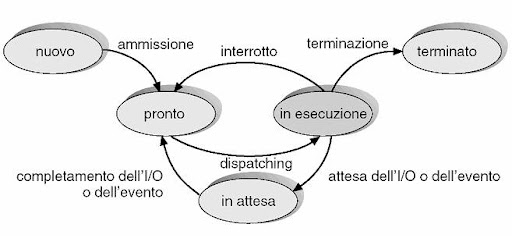
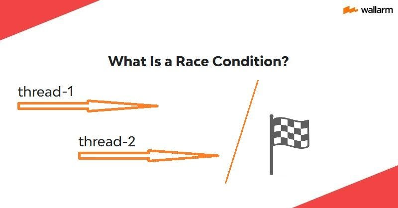
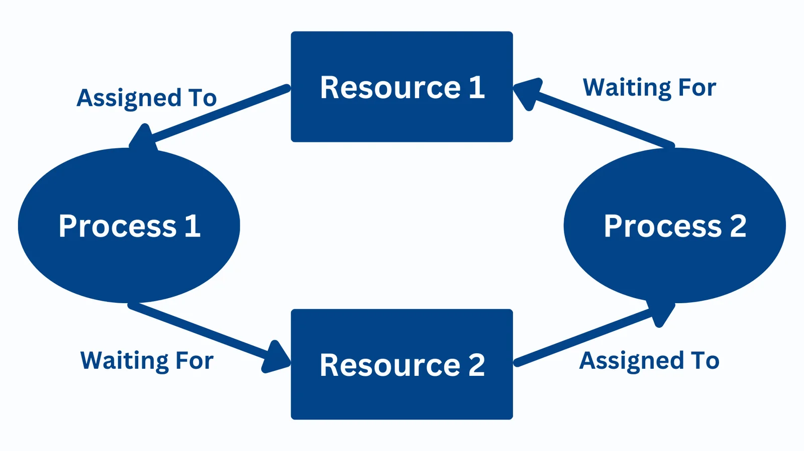

Sistemi Operativi
Programmazione Concorrente
1. Fondamenti di Concorrenza
Definizione di Concorrenza
La concorrenza è la capacità di un sistema di gestire più processi o thread in esecuzione apparentemente simultanea. Nei sistemi moderni si distinguono due scenari:
- Sistemi monoprocessore: La concorrenza è simulata attraverso tecniche di time-sharing, dove il processore alterna rapidamente l'esecuzione tra diversi processi
- Sistemi multiprocessore/multicore: Possibilità di esecuzione parallela effettiva, con processi eseguiti contemporaneamente su core distinti
Classificazione dei Processi
Processi disgiunti: Non condividono risorse e possono essere eseguiti indipendentemente
Processi congiunti: Condividono risorse di sistema e richiedono meccanismi di coordinamento
Modelli di Interazione
- Competizione: Processi in conflitto per l'accesso a risorse esclusive
- Cooperazione: Processi che collaborano al completamento di un compito comune
2. Problemi e Soluzioni
Race Condition
Si verifica quando il risultato finale dipende dall'ordine temporale in cui i processi accedono a risorse condivise. Questo può portare a:
- Inconsistenze nei dati
- Comportamenti imprevedibili
- Errori difficili da riprodurre
Meccanismi di Sincronizzazione
Semafori: Strutture dati che controllano l'accesso a risorse attraverso operazioni atomiche wait() e signal()
sem_post(sem_t *s);
Mutex: Meccanismo di esclusione mutua che garantisce accesso esclusivo a una risorsa
pthread_mutex_unlock(&mutex);
3. Problemi Classici
Problema dei Filosofi a Cena

Cinque filosofi alternano tra pensare e mangiare, utilizzando due bacchette condivise. Le sfide principali includono:
- Prevenzione di deadlock
- Evitare starvation
- Massimizzare il parallelismo
Problema Produttore-Consumatore
Modello di cooperazione tra processi che condividono un buffer di dimensione limitata:
Consumatore: Preleva e processa i dati dal buffer
Sfide: Sincronizzazione, gestione buffer pieno/vuoto
4. Deadlock e Starvation
Condizioni per il Deadlock
Secondo il modello di Coffman, sono necessarie e sufficienti quattro condizioni contemporaneamente:
- Mutua esclusione: Le risorse sono non condivisibili
- Hold and wait: Processi mantengono risorse acquisite mentre ne attendono altre
- No prelazione: Le risorse non possono essere forzatamente sottratte
- Attesa circolare: Esiste un ciclo di processi in attesa di risorse
Strategie di Gestione
| Approccio | Descrizione |
|---|---|
| Prevenzione | Eliminazione sistematica di almeno una delle 4 condizioni |
| Evitamento | Uso dell'algoritmo del banchiere per allocazioni sicure |
| Rilevamento | Costruzione del grafo di attesa e ricerca di cicli |
| Recupero | Terminazione processi o prelazione risorse |
Starvation
Fenomeno correlato in cui un processo non ottiene mai le risorse necessarie, pur non essendo in deadlock. Soluzioni includono:
- Fair scheduling (aging dei processi)
- Priority inheritance
- Random selection
Applicazioni Pratiche
Sistemi Operativi
Gestione di processi multipli, scheduling delle CPU, e accesso concorrente alle periferiche di I/O
Database
Controllo della concorrenza nelle transazioni, gestione dei lock, e isolamento delle operazioni
Applicazioni Web
Gestione di richieste simultanee, sessioni utente, e accesso a risorse condivise
Considerazioni Finali
La programmazione concorrente rappresenta una delle sfide più complesse nello sviluppo software moderno. La corretta gestione delle risorse condivise e dei meccanismi di sincronizzazione è fondamentale per garantire non solo l'efficienza del sistema, ma soprattutto la sua correttezza e affidabilità. Lo studio dei problemi classici e delle relative soluzioni fornisce un bagaglio metodologico essenziale per affrontare scenari reali in ambiti critici come i sistemi distribuiti, il real-time computing e le applicazioni ad alta disponibilità.